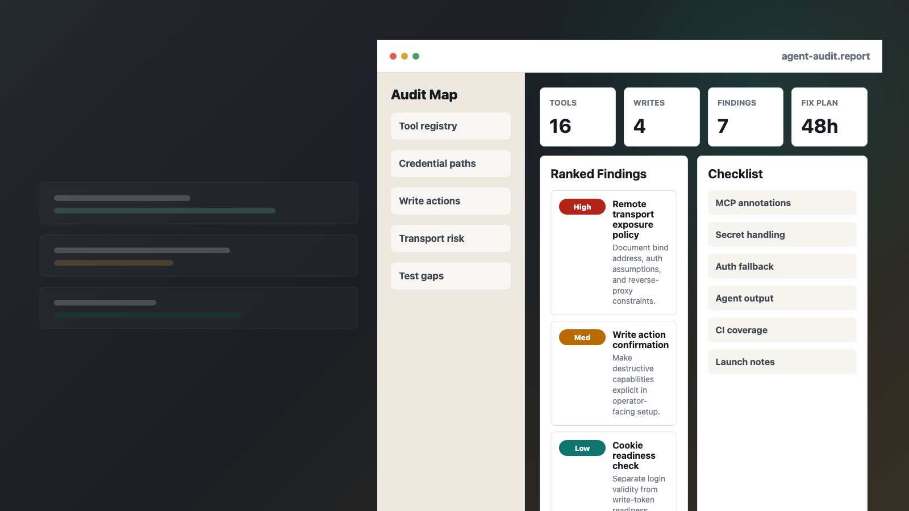

Boundary Map
Every tool, transport, credential, external API, and write action mapped into read-only, write, destructive, and privileged paths.

48-hour async review for teams shipping agent tools
Start with a $99 quick scan, a $299 focused review, or the $1,000 full audit sprint. I review agent and MCP products for the practical failure modes that break launches: tool boundaries, secrets, auth, prompt/tool injection, test gaps, and deployment assumptions.
New direct $1,000 path
When a live agent, RAG workflow, support bot, coding-agent loop, or model API bill is already spiking, the useful offer is not another generic audit. This package produces a 24h containment plan: spend-driver map, loop caps, retry budgets, retrieval limits, model-routing changes, cache candidates, and instrumentation guardrails.
Open the AI Cost Spike Emergency Sprint page Estimate OpenRouter spend before choosing a package Open the emergency intake Use TokenMeter before the scope noteFree LLM cost estimator
For teams comparing model routes or seeing unexpected OpenRouter spend, the calculator turns monthly requests, token volume, cache-read share, retry overhead, and tool-call fanout into a sanitized intake packet. It routes small checks to the USD $99 quick audit, recurring leaks to the USD $299 cost review, and urgent burn-rate problems to the USD $1,000 emergency sprint.
Open the OpenRouter Cost Calculator Open the OpenRouter Balance Guardrail Open the LiteLLM Budget Guardrail Open TokenMeter quick audit path Open TokenMeter emergency pathFast paid music test
Not every visitor is ready to buy a security audit. The AI music storefront routes SaaS/Product Hunt launch videos, ecommerce product videos, local ads, UGC agency client approval hooks, real estate listing videos, wedding highlights, podcast intros, sponsor segments, and creator intros into one brief-first paid path. Payment is still requested only after the written music brief and package are accepted.
Open the AI Music Generator storefront Calculate the right AI music package Generate the AI music order packet Open SaaS $29 prefilled order desk Open product $29 prefilled order desk Open UGC $149 prefilled order desk Open podcast $149 prefilled order desk Hear sample-to-order packets Copy the $29 AI music brief Open SaaS launch video music page Open product video music page Open short-form ad music page Open UGC agency music hook page Open AI music order formWhat ships
Every tool, transport, credential, external API, and write action mapped into read-only, write, destructive, and privileged paths.
Ranked issues with reproduction steps, evidence, affected files, severity, impact, and the lowest-risk fix path.
Concrete tests for tool contracts, auth gates, secret redaction, retry behavior, and failure states that agents commonly trigger.
Short handoff covering what to fix now, what to monitor, and what to defer without increasing customer-facing risk.
Sample evidence
The sample audits cover five public-code targets: douban-mcp, a public MCP server + CLI with auth, write tools, and external scraping; firecrawl-mcp-server, a production MCP server with hosted/local transports, OAuth, monitor tools, and local parsing; browserbase/mcp-server-browserbase, a browser automation MCP server with stdio and HTTP transports, sessions, page actions, observation, and extraction tools; jackjin1997/sentinel, a self-owned autonomous incident-response agent; and jackjin1997/agentgap, a self-owned agent config and MCP bridge.
Open the douban-mcp sample report Open the Firecrawl MCP sample report Open the Browserbase MCP sample report Open the Sentinel dogfood report Open the AgentGap dogfood report Compare all five sample reportsBest fit
Free triage tool
The repo includes a browser scanner for public GitHub URLs, a private local-file scanner, a Node script, and a reusable GitHub Action that scan an agent or MCP codebase for review signals: transports, write actions, credential paths, auth gates, redaction, tests, and CI.
Open the MCP server security scan page Open the MCP SSRF focused review page Open the AI cost spike emergency page Open the OpenRouter cost calculator Open the LiteLLM budget guardrail Open the AI agent cost leak review page Open the AI agent security audit page Open the AI Agent Security Radar Open the MCP Security Radar Use the GitHub Code Scanning workflow Paste a public GitHub URL Use the scanner Open the MCP security checklistReady to start
Use this local-only builder to prepare the exact scope, delivery preference, and payment network before opening a GitHub request. Public GitHub repo requests get an automated no-execution scanner triage comment before paid scope acceptance.
Payment
Open an audit request, include the repo/product slice, and pay after scope is accepted. ETH, ERC-20 USDC/USDT/DAI, SOL, and SPL USDC are ready now; if you need an invoice-first discussion, choose that option in the intake form.
Review the Statement of Work before payment Open the fixed $1,000 quote0xa7F2235a77FBc4eCcbF60923BCDF6Df74eC710FF
Accepted assets after scope acceptance: ETH or ERC-20 USDC/USDT/DAI.
5CjUaMAsbXx2Hjczwoqi4MChTU1KjfUzbdiwPqZeceVM
Accepted assets after scope acceptance: SOL or SPL USDC.
Operator
Backend engineer focused on Agent Harness, Tool Use, MCP, Evals, and AI infrastructure.